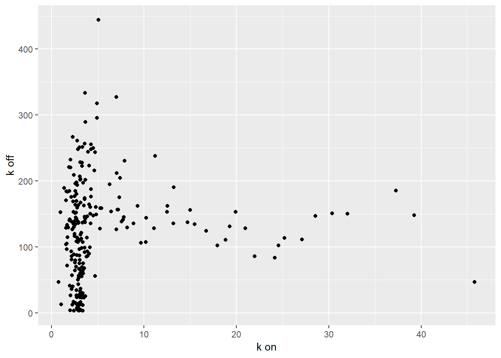
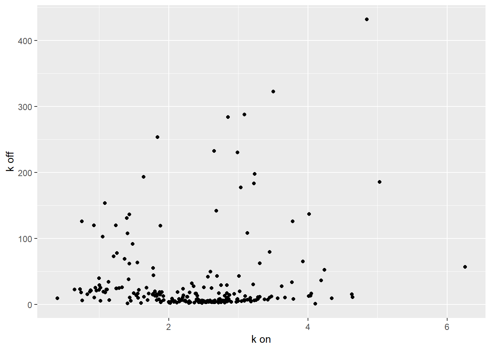
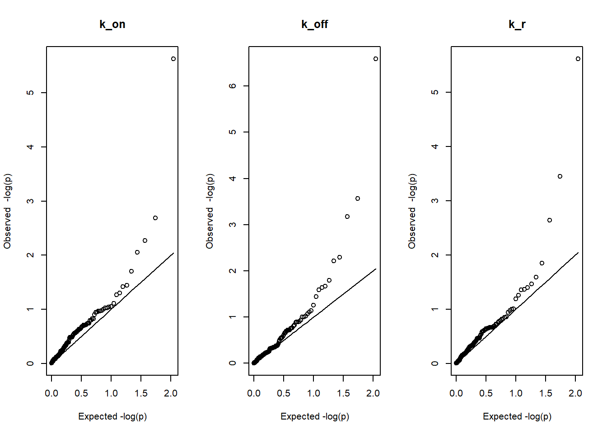
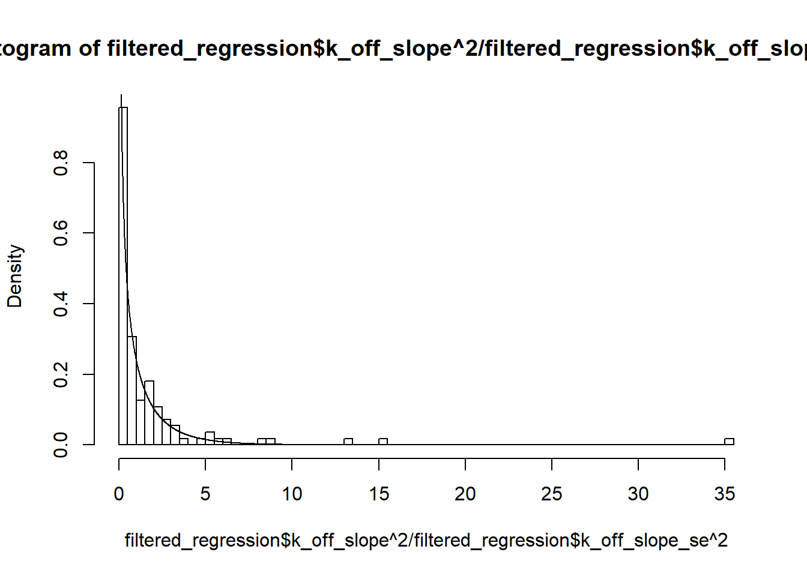
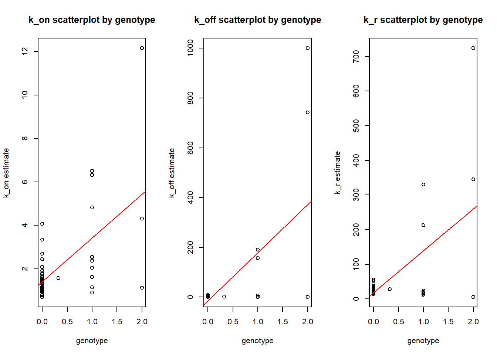

Last updated: 2020-02-17
Checks: 6 1
Knit directory: Thesis_single_RNA/
This reproducible R Markdown analysis was created with workflowr (version 1.5.0). The Checks tab describes the reproducibility checks that were applied when the results were created. The Past versions tab lists the development history.
Great! Since the R Markdown file has been committed to the Git repository, you know the exact version of the code that produced these results.
Great job! The global environment was empty. Objects defined in the global environment can affect the analysis in your R Markdown file in unknown ways. For reproduciblity it’s best to always run the code in an empty environment.
The command set.seed(20191113) was run prior to running the code in the R Markdown file. Setting a seed ensures that any results that rely on randomness, e.g. subsampling or permutations, are reproducible.
Great job! Recording the operating system, R version, and package versions is critical for reproducibility.
Nice! There were no cached chunks for this analysis, so you can be confident that you successfully produced the results during this run.
Using absolute paths to the files within your workflowr project makes it difficult for you and others to run your code on a different machine. Change the absolute path(s) below to the suggested relative path(s) to make your code more reproducible.
| absolute | relative |
|---|---|
| C:/Users/Moonkin/Documents/GitHub/Thesis_single_RNA/analysis/estimates_for_235_genes.rds | analysis/estimates_for_235_genes.rds |
| C:/Users/Moonkin/Documents/GitHub/Thesis_single_RNA/analysis/regression_for_235_genes.txt | analysis/regression_for_235_genes.txt |
Great! You are using Git for version control. Tracking code development and connecting the code version to the results is critical for reproducibility. The version displayed above was the version of the Git repository at the time these results were generated.
Note that you need to be careful to ensure that all relevant files for the analysis have been committed to Git prior to generating the results (you can use wflow_publish or wflow_git_commit). workflowr only checks the R Markdown file, but you know if there are other scripts or data files that it depends on. Below is the status of the Git repository when the results were generated:
Ignored files:
Ignored: .RData
Ignored: .Rhistory
Ignored: analysis/.RData
Ignored: analysis/.Rhistory
Untracked files:
Untracked: analysis/Filter.Rmd
Untracked: analysis/MLE_and_regression_for_235_genes.Rmd
Untracked: analysis/Weighted_regression.Rmd
Untracked: analysis/clean_dataset_for_analysis.txt
Untracked: analysis/estimates_for_235_genes.RData
Untracked: analysis/estimates_for_235_genes.rds
Untracked: analysis/final_genotype_data.txt
Untracked: analysis/genes_to_search.txt
Untracked: analysis/genotypes.txt
Untracked: analysis/regression_for_235_genes.txt
Untracked: analysis/rplot.jpg
Untracked: analysis/search_script.py
Unstaged changes:
Modified: Data_sim.Rmd
Modified: analysis/MLE.py
Modified: analysis/MLE_with_si.py
Modified: analysis/Question_1.Rmd
Modified: analysis/Real_data_filter.Rmd
Note that any generated files, e.g. HTML, png, CSS, etc., are not included in this status report because it is ok for generated content to have uncommitted changes.
There are no past versions. Publish this analysis with wflow_publish() to start tracking its development.
First we load MLE estimates along with genotypes for top 235 genes and regression model outputs.
library(rlist)Warning: package 'rlist' was built under R version 3.5.3estimates<-list.load("C:/Users/Moonkin/Documents/GitHub/Thesis_single_RNA/analysis/estimates_for_235_genes.rds")
regression<-read.table("C:/Users/Moonkin/Documents/GitHub/Thesis_single_RNA/analysis/regression_for_235_genes.txt", header = T, sep = "\t")mean_estimates=matrix(, nrow = 235, ncol = 3)
median_estimates=matrix(, nrow = 235, ncol = 3)
for (i in 1:235){
current<-estimates[[i]][,1:3]
mean_estimates[i,1]<-mean(as.numeric(current[,1]))
mean_estimates[i,2]<-mean(as.numeric(current[,2]))
mean_estimates[i,3]<-mean(as.numeric(current[,3]))
median_estimates[i,1]<-median(as.numeric(current[,1]))
median_estimates[i,2]<-median(as.numeric(current[,2]))
median_estimates[i,3]<-median(as.numeric(current[,3]))
}library(ggplot2)Warning: package 'ggplot2' was built under R version 3.5.1mean_estimates=data.frame(mean_estimates)
colnames(mean_estimates)<-c("kon","koff","kr")
ggplot(mean_estimates, aes(x=kon, y=koff))+geom_point()+labs(y = "k off",x="k on")
median_estimates=data.frame(median_estimates)
colnames(median_estimates)<-c("kon","koff","kr")
ggplot(median_estimates, aes(x=kon, y=koff))+geom_point()+labs(y = "k off",x="k on")
filtered_regression<-regression[which(median_estimates$koff<=10), ]par(mfrow=c(1,3))
U=seq(0, 1, length.out = 112)
U=U[2:112]
plot(-log(U,base=10),-log(sort(filtered_regression$k_on_slope_p),base=10), main="k_on", xlab="Expected -log(p)", ylab="Observed -log(p)")
lines(-log(U,base=10),-log(U,base=10))
plot(-log(U,base=10),-log(sort(filtered_regression$k_off_slope_p),base=10), main="k_off", xlab="Expected -log(p)", ylab="Observed -log(p)")
lines(-log(U,base=10),-log(U,base=10))
plot(-log(U,base=10),-log(sort(filtered_regression$k_r_slope_p),base=10), main="k_r", xlab="Expected -log(p)", ylab="Observed -log(p)")
lines(-log(U,base=10),-log(U,base=10))
filtered_regression[p.adjust(filtered_regression$k_on_slope_p, method = "BH" , n = length(filtered_regression$k_off_slope_p))<0.05,] gene k_on_int k_on_slope k_on_int_p k_on_slope_p
2 ENSG00000197728 1.405574 2.012058 3.115331e-07 2.37079e-06
k_on_int_se k_on_slope_se k_off_int k_off_slope k_off_int_p
2 0.2388814 0.3785599 -14.78051 193.1598 0.4750069
k_off_slope_p k_off_int_se k_off_slope_se k_r_int k_r_slope k_r_int_p
2 2.59334e-07 20.53759 32.5463 18.51257 120.4671 0.2022224
k_r_slope_p k_r_int_se k_r_slope_se
2 2.457675e-06 14.32994 22.70893filtered_regression[p.adjust(filtered_regression$k_off_slope_p, method = "BH" , n = length(filtered_regression$k_off_slope_p))<0.05,] gene k_on_int k_on_slope k_on_int_p k_on_slope_p
2 ENSG00000197728 1.405574 2.0120582 3.115331e-07 2.370790e-06
147 ENSG00000151131 3.872758 -0.4931009 2.802306e-09 1.601740e-01
209 ENSG00000163811 5.073687 -1.0143604 1.708668e-13 2.073266e-03
k_on_int_se k_on_slope_se k_off_int k_off_slope k_off_int_p
2 0.2388814 0.3785599 -14.78051 193.1598 4.750069e-01
147 0.5391907 0.3459728 242.91804 -124.9144 3.696489e-05
209 0.5115814 0.3125421 409.08184 -179.6398 1.520882e-06
k_off_slope_p k_off_int_se k_off_slope_se k_r_int k_r_slope
2 2.593340e-07 20.53759 32.54630 18.51257 120.4671
147 6.714828e-04 53.73867 34.48152 533.49299 -270.0376
209 2.730323e-04 75.19260 45.93766 675.37453 -255.0446
k_r_int_p k_r_slope_p k_r_int_se k_r_slope_se
2 2.022224e-01 2.457675e-06 14.32994 22.70893
147 1.191089e-05 3.545150e-04 109.93939 70.54282
209 1.430224e-04 1.411996e-02 164.25906 100.35132filtered_regression[p.adjust(filtered_regression$k_r_slope_p, method = "BH" , n = length(filtered_regression$k_off_slope_p))<0.05,] gene k_on_int k_on_slope k_on_int_p k_on_slope_p
2 ENSG00000197728 1.405574 2.0120582 3.115331e-07 2.37079e-06
147 ENSG00000151131 3.872758 -0.4931009 2.802306e-09 1.60174e-01
k_on_int_se k_on_slope_se k_off_int k_off_slope k_off_int_p
2 0.2388814 0.3785599 -14.78051 193.1598 4.750069e-01
147 0.5391907 0.3459728 242.91804 -124.9144 3.696489e-05
k_off_slope_p k_off_int_se k_off_slope_se k_r_int k_r_slope
2 2.593340e-07 20.53759 32.54630 18.51257 120.4671
147 6.714828e-04 53.73867 34.48152 533.49299 -270.0376
k_r_int_p k_r_slope_p k_r_int_se k_r_slope_se
2 2.022224e-01 2.457675e-06 14.32994 22.70893
147 1.191089e-05 3.545150e-04 109.93939 70.54282U=seq(0,30,by=0.01)
hist(filtered_regression$k_on_slope^2/filtered_regression$k_on_slope_se^2, breaks=100,freq = FALSE)
lines(U,dchisq(U,1))hist(filtered_regression$k_off_slope^2/filtered_regression$k_off_slope_se^2, breaks=100,freq = FALSE)
lines(U,dchisq(U,1))
hist(filtered_regression$k_r_slope^2/filtered_regression$k_r_slope_se^2, breaks=100,freq = FALSE)
lines(U,dchisq(U,1))ks.test(filtered_regression$k_on_slope^2/filtered_regression$k_on_slope_se^2,dchisq(U,1))
Two-sample Kolmogorov-Smirnov test
data: filtered_regression$k_on_slope^2/filtered_regression$k_on_slope_se^2 and dchisq(U, 1)
D = 0.80329, p-value < 2.2e-16
alternative hypothesis: two-sidedks.test(filtered_regression$k_off_slope^2/filtered_regression$k_off_slope_se^2,dchisq(U,1))
Two-sample Kolmogorov-Smirnov test
data: filtered_regression$k_off_slope^2/filtered_regression$k_off_slope_se^2 and dchisq(U, 1)
D = 0.76561, p-value < 2.2e-16
alternative hypothesis: two-sidedks.test(filtered_regression$k_r_slope^2/filtered_regression$k_r_slope_se^2,dchisq(U,1))
Two-sample Kolmogorov-Smirnov test
data: filtered_regression$k_r_slope^2/filtered_regression$k_r_slope_se^2 and dchisq(U, 1)
D = 0.77121, p-value < 2.2e-16
alternative hypothesis: two-sidedHere the scatterplot of estimates vs genotype for ENSG00000197728 gene, the only one that with all slopes coefficients being significant at 0.05 level after BH adjustment.
ENSG00000197728=estimates[[2]]
ENSG00000151131=estimates[[147]]
ENSG00000163811=estimates[[209]]
par(mfrow=c(1,3))
model1<- lm(k_on~genotype, data=ENSG00000197728)
model2<- lm(k_off~genotype, data=ENSG00000197728)
model3<- lm(k_r~genotype, data=ENSG00000197728)
plot(ENSG00000197728$genotype,ENSG00000197728$k_on, xlab="genotype", ylab="k_on estimate", main= "k_on scatterplot by genotype")
abline(model1, col="red")
plot(ENSG00000197728$genotype,ENSG00000197728$k_off, xlab="genotype", ylab="k_off estimate", main= "k_off scatterplot by genotype")
abline(model2, col="red")
plot(ENSG00000197728$genotype,ENSG00000197728$k_r, xlab="genotype", ylab="k_r estimate", main= "k_r scatterplot by genotype")
abline(model3, col="red")
print(summary(lm(k_on~genotype, data=ENSG00000197728)))
Call:
lm(formula = k_on ~ genotype, data = ENSG00000197728)
Residuals:
Min 1Q Median 3Q Max
-4.2954 -0.4779 -0.2745 0.2301 6.7212
Coefficients:
Estimate Std. Error t value Pr(>|t|)
(Intercept) 1.4056 0.2389 5.884 3.12e-07 ***
genotype 2.0121 0.3786 5.315 2.37e-06 ***
---
Signif. codes: 0 '***' 0.001 '**' 0.01 '*' 0.05 '.' 0.1 ' ' 1
Residual standard error: 1.546 on 51 degrees of freedom
Multiple R-squared: 0.3565, Adjusted R-squared: 0.3438
F-statistic: 28.25 on 1 and 51 DF, p-value: 2.371e-06print(summary(lm(k_off~genotype, data=ENSG00000197728)))
Call:
lm(formula = k_off ~ genotype, data = ENSG00000197728)
Residuals:
Min 1Q Median 3Q Max
-370.79 15.02 15.71 16.62 628.46
Coefficients:
Estimate Std. Error t value Pr(>|t|)
(Intercept) -14.78 20.54 -0.720 0.475
genotype 193.16 32.55 5.935 2.59e-07 ***
---
Signif. codes: 0 '***' 0.001 '**' 0.01 '*' 0.05 '.' 0.1 ' ' 1
Residual standard error: 132.9 on 51 degrees of freedom
Multiple R-squared: 0.4085, Adjusted R-squared: 0.3969
F-statistic: 35.22 on 1 and 51 DF, p-value: 2.593e-07print(summary(lm(k_r~genotype, data=ENSG00000197728)))
Call:
lm(formula = k_r ~ genotype, data = ENSG00000197728)
Residuals:
Min 1Q Median 3Q Max
-253.97 -0.49 5.03 11.63 464.30
Coefficients:
Estimate Std. Error t value Pr(>|t|)
(Intercept) 18.51 14.33 1.292 0.202
genotype 120.47 22.71 5.305 2.46e-06 ***
---
Signif. codes: 0 '***' 0.001 '**' 0.01 '*' 0.05 '.' 0.1 ' ' 1
Residual standard error: 92.73 on 51 degrees of freedom
Multiple R-squared: 0.3556, Adjusted R-squared: 0.3429
F-statistic: 28.14 on 1 and 51 DF, p-value: 2.458e-06print(summary(lm(k_off~genotype, data=ENSG00000151131)))
Call:
lm(formula = k_off ~ genotype, data = ENSG00000151131)
Residuals:
Min 1Q Median 3Q Max
-224.66 -111.19 8.66 13.75 757.08
Coefficients:
Estimate Std. Error t value Pr(>|t|)
(Intercept) 242.92 53.74 4.520 3.7e-05 ***
genotype -124.91 34.48 -3.623 0.000671 ***
---
Signif. codes: 0 '***' 0.001 '**' 0.01 '*' 0.05 '.' 0.1 ' ' 1
Residual standard error: 153.3 on 51 degrees of freedom
Multiple R-squared: 0.2047, Adjusted R-squared: 0.1891
F-statistic: 13.12 on 1 and 51 DF, p-value: 0.0006715print(summary(lm(k_r~genotype, data=ENSG00000151131)))
Call:
lm(formula = k_r ~ genotype, data = ENSG00000151131)
Residuals:
Min 1Q Median 3Q Max
-473.08 -228.95 27.97 40.47 1660.48
Coefficients:
Estimate Std. Error t value Pr(>|t|)
(Intercept) 533.49 109.94 4.853 1.19e-05 ***
genotype -270.04 70.54 -3.828 0.000355 ***
---
Signif. codes: 0 '***' 0.001 '**' 0.01 '*' 0.05 '.' 0.1 ' ' 1
Residual standard error: 313.7 on 51 degrees of freedom
Multiple R-squared: 0.2232, Adjusted R-squared: 0.208
F-statistic: 14.65 on 1 and 51 DF, p-value: 0.0003545print(summary(lm(k_off~genotype, data=ENSG00000163811)))
Call:
lm(formula = k_off ~ genotype, data = ENSG00000163811)
Residuals:
Min 1Q Median 3Q Max
-228.49 -74.45 -44.73 49.12 714.02
Coefficients:
Estimate Std. Error t value Pr(>|t|)
(Intercept) 409.08 75.19 5.440 1.52e-06 ***
genotype -179.64 45.94 -3.911 0.000273 ***
---
Signif. codes: 0 '***' 0.001 '**' 0.01 '*' 0.05 '.' 0.1 ' ' 1
Residual standard error: 211.7 on 51 degrees of freedom
Multiple R-squared: 0.2307, Adjusted R-squared: 0.2156
F-statistic: 15.29 on 1 and 51 DF, p-value: 0.000273
sessionInfo()R version 3.5.0 (2018-04-23)
Platform: x86_64-w64-mingw32/x64 (64-bit)
Running under: Windows 10 x64 (build 17763)
Matrix products: default
locale:
[1] LC_COLLATE=English_United States.1252
[2] LC_CTYPE=English_United States.1252
[3] LC_MONETARY=English_United States.1252
[4] LC_NUMERIC=C
[5] LC_TIME=English_United States.1252
attached base packages:
[1] stats graphics grDevices utils datasets methods base
other attached packages:
[1] ggplot2_3.1.0 rlist_0.4.6.1
loaded via a namespace (and not attached):
[1] Rcpp_1.0.2 compiler_3.5.0 pillar_1.4.2
[4] later_0.8.0 git2r_0.26.1 highr_0.7
[7] plyr_1.8.4 workflowr_1.5.0 tools_3.5.0
[10] digest_0.6.17 evaluate_0.11 tibble_2.1.3
[13] gtable_0.2.0 pkgconfig_2.0.2 rlang_0.4.2
[16] yaml_2.2.0 withr_2.1.2 stringr_1.3.1
[19] dplyr_0.8.3 knitr_1.20 fs_1.3.1
[22] rprojroot_1.3-2 grid_3.5.0 tidyselect_0.2.5
[25] glue_1.3.0 data.table_1.11.8 R6_2.3.0
[28] rmarkdown_1.10 purrr_0.2.5 magrittr_1.5
[31] backports_1.1.2 scales_1.0.0 promises_1.0.1
[34] htmltools_0.3.6 assertthat_0.2.0 colorspace_1.3-2
[37] httpuv_1.5.1 labeling_0.3 stringi_1.1.7
[40] lazyeval_0.2.1 munsell_0.5.0 crayon_1.3.4